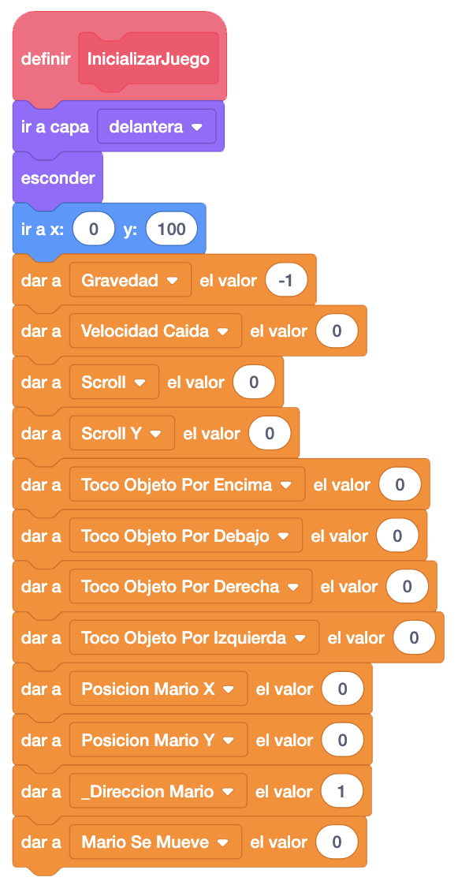
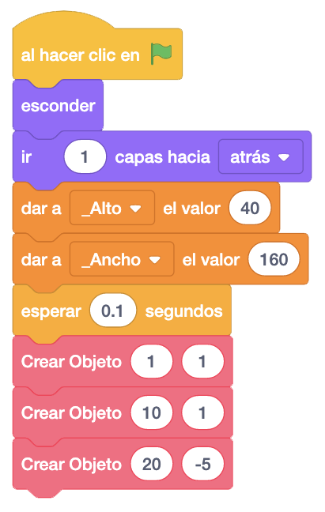
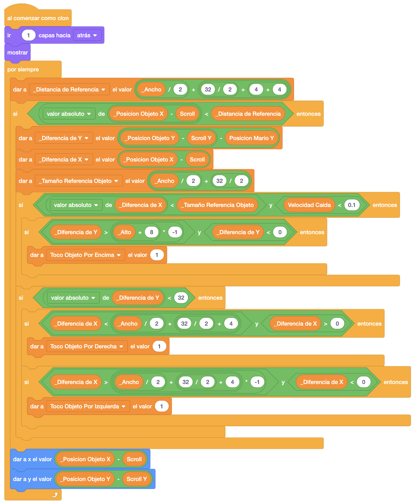
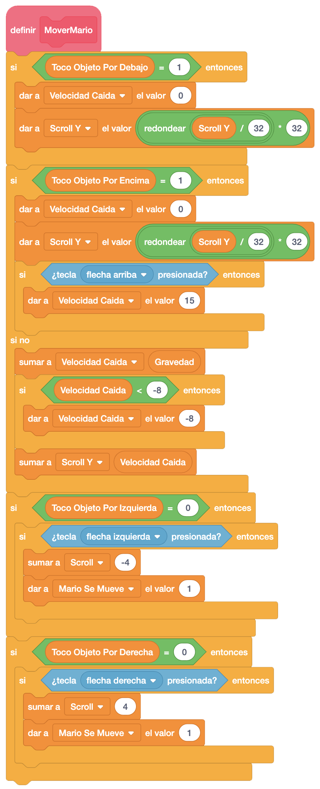
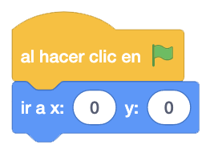
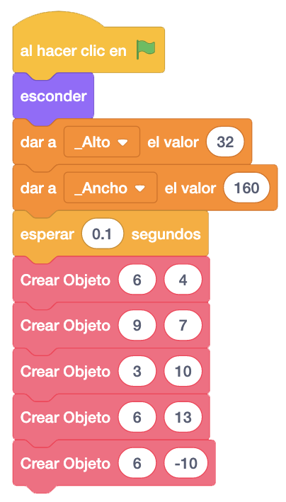

Tomamos como referencia la versión con el suelo, la plataforma y Mario.
Lo primero que haremos será crear la variable "Scroll Y" que inicializaremos a "0" en el bloque
"Inicializar Juego" de Mario, junto a la variable "Scroll".

Ahora vamos a colocar el suelo. Lo pondremos a la altura de siempre pero añadiremos un bloque en la altura "-5" que luego veremos para qué nos sirve.

Además, añadiremos la colocación automática del objeto en el eje "Y" con referencia al scroll igual que
hacemos con el eje "X", pero con la variable "Scroll Y".
También tendremos en cuenbta que en el bloque "Al Comenzar Como Clon" donde tenemos "_Posición Objeto Y"
tenemos que cambiarlo por "_Posición Objeto Y" menos "Scroll Y" para colocarlo en base a ese scroll.

Esto lo haremos tanto en el suelo como en la plataforma (y el resto de objetos que vayamos añadiendo).
Ahora vamos a Mario. En el bloque "MoverMario", tendremnos que cambiar en todos los sitios donde damos valor
a la coordenada "Y" por asignar ese valor a la variable "Scroll Y".
Lo haremos cuando se controla si el valor de "Toco Objeto Por Debajo" es "1", cuando se controla si el valor
de "Toco Objeto Por Encima" es "1", en caso de que sea "0" la variable "Toco Objeto Por Encima",

Si probamos ahora el juego, podremos saltar del primer suelo al segundo, pero si saltamos desde el final del
segundo caeremos sobre el tercer suelo que colocamos con la "Y" en negativo. Para eso lo pusimos.
Vamos a colocar las barras laterales y la superior e inferior para que no se nos vean partes de objetos que
tenemos fuera de la pantalla.
En ambas barras lo único que haremos será colocarlas en la posición central.

Ahora colocaremos la plataforma donde queramos y tendremos una versión de Mario con Scoll "X e "Y".

Si no te funcionan las plataformas, revisa que hayas colocado la plataforma en la posición "Y" igual que se
hace en la poasición "X".
Recuerda también revisar que en el bloque "Al Comenzar Como Clon" donde tenemos "_Posición Objeto Y" tenemos
que cambiarlo por "_Posición Objeto Y" menos "Scroll Y" para colocarlo en base a ese scroll.
El juego quedaría de esta forma.
Podemos ver el juego terminado con el scroll horizontal y el vertical pulsando aquí.